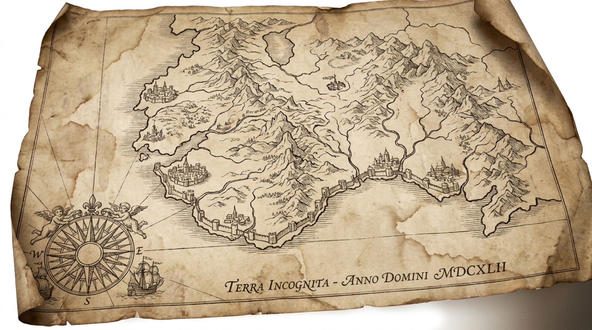

A map that annotates itself as you arrive.
One generated atlas page anchors the page. Trade routes trace themselves on when it scrolls into view, a compass rose you can drag reports true bearing, and every walled city holds an annotation for those who look closely.

Northport — founded on a lie, thrived anyway
The Sunken Isles — chart only at low tide
Vareth Crossing — toll paid in stories, not coin
The Silent Wall — no bells rung here since MDCX
000° N
Terra Incognita · Anno Domini MDCXLII · generated reference plate
01
Routes
Three trade paths trace themselves the first time the plate scrolls into view — dashes drawn on with a stroke offset, not a video.
02
Compass
Drag the rose, or focus it and use the arrow keys. Bearing is reported live, the way a real dividers-and-compass reading would be logged.
03
Two plates
Flip between parchment and blueprint with the header toggle — the same map, re-inked as if traced onto a surveyor's cyanotype.